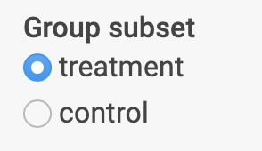

Deploying a portal using the package relies on two data files – an expression matrix and a table with observed measures (e.g. clinical measures) – and a configuration file that tells the package how to display the portal. For the simple case where each subject in the dataset only has one sample, there is a command-line wizard that will guide you step-by-step through the creation of the configuration file. Alternatively, there is a function that creates an empty configuration file with placeholders for the required properties, which can then be edited in any text editor. For more complex cases, such as multiple samples per subject, the Data Preparation Guide vignette describes how to prepare the data to use with the package.
Using the wizard
Before starting the wizard, ensure you do the following
- Create a folder where the app will be located
If using RStudio, create a new project to facilitate the rest of the setup.
- Place an expression matrix file in the project folder
With HGNC or similar gene names in rows and samples in columns. The
file can be a .csv, .tsv/txt or .rds file. If using an .rds file, save
it as a matrix object, not a data.frame.
Go to the next step if your expression matrix is structured in this way and you saved it in the project folder:
| S1_01 | S1_02 | S2_01 | S2_02 | S3_01 | S3_02 | |
|---|---|---|---|---|---|---|
| ABC | -0.6831750 | 0.2437835 | -0.2209547 | 0.6605645 | 0.7759998 | -1.4715264 |
| BCD | 0.2311367 | 0.2473926 | -0.8631691 | 1.1626984 | -0.2082720 | 0.9603607 |
| CDE | -1.5595875 | 0.5966169 | 0.5978796 | -1.6670746 | -1.0204471 | 1.2269961 |
| DEF | 0.2540790 | -0.2852695 | -1.7257064 | 0.8422038 | -0.9859356 | -1.5267051 |
| EFG | -1.4995916 | 1.3327259 | -0.8031326 | 1.1884620 | 1.2908264 | -0.3603212 |
| FGH | -0.5616935 | 1.2097421 | 2.1171175 | 0.9621508 | -1.4646636 | -0.0778888 |
| GHI | 0.7998584 | 0.3775895 | -0.3548507 | 0.4383966 | -0.6524048 | -1.1373752 |
| HIJ | -0.6898870 | 1.9613279 | -1.2776089 | 0.3990556 | -0.8474973 | -0.0301892 |
| IJK | -0.6727743 | 0.3140299 | -2.3037435 | -0.6942150 | -0.2550900 | 1.0595559 |
| JKL | 0.1761322 | -0.4768759 | -0.0073592 | -0.4744882 | -1.4309626 | 0.5851367 |
- Place a measures table file in the project folder
With variables in columns and subjects in rows. The subjects must be
in the same order as their samples in the expression matrix. Again most
formats can be used, but if using a .rds file, the measures file must be
saved as a data.frame.
Go to the next step if your measures table is structured in this way and you saved it in the project folder:
| Sample_ID | Platelets_m01 | Platelets_m02 | Age | drugNaive |
|---|---|---|---|---|
| S1 | 172.5011 | 174.6004 | 58 | Yes |
| S2 | 150.7608 | 159.8928 | 42 | Yes |
| S3 | 190.8724 | 209.4935 | 39 | No |
- Optionally place a metadata table file in the folder
A table that contains sample information such as control group, age, etc. This will add radio buttons on the interface for selecting subsets based on these variables. It should also follow a one row per subject/sample format.
Finally,
- In R, load the package and run
create_config_wizard()
If you are not using an RStudio project, ensure that the folder with
the files is the current working directory (check with
getwd()).
The wizard will inform you about each stage and ask questions to
set up the configuration file. It will also wait when you are
required to do additional actions such as creating folders and moving
files. Depending on your choices, at least two files will have been
created: app.R and config.yaml.
- Open and run the contents of app.R to test the portal
You can also copy the project folder to a Shiny server or use the rsconnect package to deploy it to shinyapps.io.
Creating a config template
Alternatively, you can run create_config_template() to
create a config.yaml file that will contain placeholders that you can
edit. If you decide on this method, you will have to create a lookup
table file, by default named lookup_table.csv, which
matches samples with subjects in the measures table and looks like the
following:
#> source sample_id subject_id group
#> 1 microarray sample_1 subject_1 control
#> 2 microarray sample_2 subject_2 treatment
#> 3 microarray sample_3 subject_3 treatmentAs you can see above, the lookup table also includes sample metadata information (group). Any metadata that you want to use to create subsets in the interface (e.g. to compute correlations only for a control group) should be included in this table and then defined in the configuration file under sample_categories, as following:
sample_categories:
- name: group
label: Group
values:
- treatment
- controlIn the portal, this will appear as:

Adding modules
Once the config.yaml file is created, you can edit it to modify the setup of modules that are already defined or add new ones. The modules included in the package vary between their requirements and aims: some of them are more exploratory and only require setting them up in the configuration file, while others were designed to help showcase and explore results of analysis. If you have computed sets of genes using a package such as WGCNA, you can create a table to load them into the geneModulesHeatmap module, for example. In the current version, the following modules are available:
shinyExprPortal::show_available_modules()
#> [1] "cohortOverview" "degModules" "degSummary"
#> [4] "degDetails" "corrModules" "singleGeneCorr"
#> [7] "singleMeasureCorr" "geneModulesHeatmap" "multiMeasureCorr"
#> [10] "compareTrajGroups" "geneProjectionOverlay"Below is a summary of which modules work with the basic data files and which ones require additional files:
No additional files needed
- Single gene/multiple measures correlations
- Single measure/all genes correlation
- Multi-measure/all genes correlation
- Expression/measures changes over time
Additional files needed
- Differential expression models summary page: table of models, DE packages outputs (e.g. limma, deseq2, edgeR)
- Differential expression models visualization: table of models, DE packages outputs (e.g. limma, deseq2, edgeR)
- Gene modules heatmap: data frame with gene lists (WGCNA, genes of interest, etc.)
- 2D gene projection (e.g. MDS, UMAP): data frame with 2D coordinates for all genes
Check the Full Configuration Guide for details about each module and how to set up the additional files required by each of them.
Deploying it remotely
You can deploy the app in your Posit/RStudio Connect server or, alternatively, in the public shinyapps.io website (note that the app will be public under the free plan). You can follow the guide to set up your account and install the required packages. The only other requirement to make it work is to modify the app.R file to include the optional dependencies for each module (as listed in the configuratoin guide).
For example, the original app.R would look like this:
library(shinyExprPortal)
run_app("config.yaml")If you want to use the geneModulesHeatmap module, for visualizing heatmaps of lists of genes, you must also have the RColorBrewer installed. To deploy in shinyapps.io, you must then import it like in the example below:
```